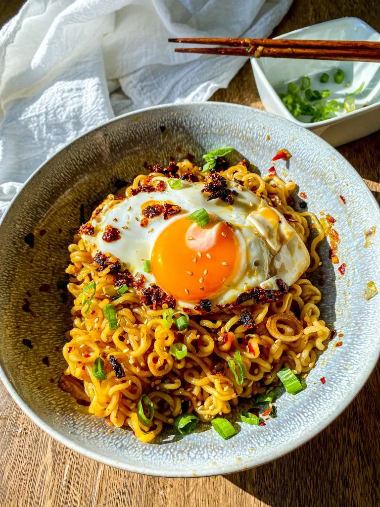

Chilli Garlic Noodles

Description
"Spice up your mealtime with Chili Garlic Noodles—a tantalizing fusion of tender noodles coated in a fiery chili garlic sauce. This quick and easy recipe delivers a bold and savory flavor with a satisfying kick of heat. Perfect for a speedy weeknight dinner or a flavorful side dish."
Ingredients
- 1 packet instant ramen noodles
- 2-4 cloves of garlic, finely minced
- ½ tbsp sesame seeds
- Chilli Flakes
- 1 tbsp dark soy sauce
- 1 tsp Vinegar
- 2 tbsp Vegetable Oil
- Oregano
- Cheese
- 1 Egg
Steps:
- Boil the instant ramen noodles according to package instructions. Drain, reserving the cooking water.
- Meanwhile, in a a heat-proof bowl, mix together the chopped garlic , spring onions, sesame seeds, seasoning packet, chilli flakes, sugar and oregano.
- Heat the oil and pour it over the garlic and spice mixture. Let it sizzle for a few minutes.
- Mix in the dark soy sauce, vinegar.
- Add the noodles along with a splash of the cooking water if required to loosen up the noodles.
- Heat up a frying pan over medium high heat with the remaining oil. Once the oil is hot enough (15 to 30 seconds), gently break an egg and let it cook until the edges turn golden and crispy and the yolk has reached your preferred doneness.
- Serve with the noodles, with a sprinkling of sesame seeds and shredded cheese.